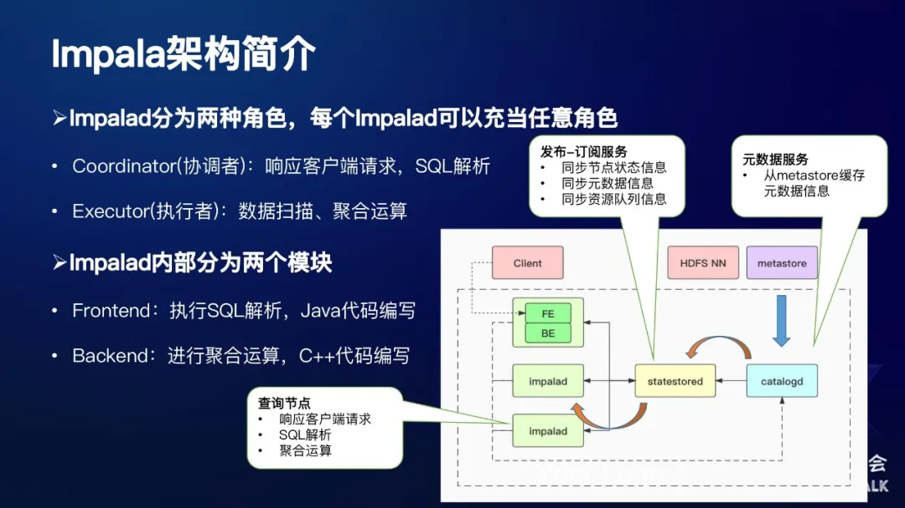

大数据006impala基础知识
一、相关资料
CDH文档 https://docs.cloudera.com/documentation/enterprise/latest/topics/impala.html
官方文档 http://impala.apache.org/downloads.html
二、定位及使用
Impala是Cloudera公司主导开发的交互式查询系统，它提供SQL语义和计算能力，但是本身并不存储数据。
1. 什么是Impala？
- Cloudera开源贡献至Apache的OLAP引擎
- 提供高并发和低延迟的交互式SQL查询
- 可以查询HDFS/HBase/Kudu中的数据
2. Impala优势
- 去中心化的MPP架构
- 完全兼容Hive元数据格式
- Apache顶级项目，社区活跃度高
- 支持多种数据格式，例如Parquet、Orc、Avro等
- 高效的查询性能，支持codegen、llvm、runtime filter等
3. Impala架构简介
下面是Impala的一个架构，如图所示： 
Impalad节点分为两种角色：
- Coordinator(协调者)：响应客户端请求，SQL解析
- Executor(执行者)：数据扫描、聚合运算
Impalad内部分为两个模块：
- Frontend：执行SQL解析，Java代码编写
- Backend：进行聚合运算，C++代码编写
Impala主要分为三种服务，每种服务对应一个单独的进程。
-
第一种服务：从最左边绿色的部分可以看起，它是一个Impalad 进程，主要有两种角色，第一种角色：Coordinator（协调者），它主要的功能是响应JDBC请求，对发过来的SQL进行执行计划解析，将SQL生成的执行计划发给各个Executor（执行者），这些Executor会进行数据扫描和聚合运算等操作。每个Impalad节点，既可以充当Coordinator，也可以充当Executor，也可以二者兼之。在Impalad内部也分为两个模块，其中FE模块由Java代码编写，主要执行SQL的解析操作，使用Java可以更好地兼容Hadoop生态圈；BE模块由C++代码编写，主要负责实际的数据扫描、聚合运算，使用C++可以进行更好地性能优化。
-
第二种服务：catalogd，它是一个元数据服务，单独的一个进程，主要就是将hive的metastore所存储的元数据缓存到自己的内存当中。
-
第三种服务：statestored，它是一个发布订阅服务，主要的作用包括节点之间状态信息的同步、元数据信息的同步、资源队列的信息同步等等。
这里以元数据服务加载为例：首先catalogd将元数据缓存到自己的内存中，同时它会将元数据信息发布到statestored上面，然后Impalad就可以去订阅相应的topic，将这部分信息拉到自己的本地进行缓存。这整体就是一个发布订阅的过程。
需要注意的是，在一个Impala集群中，statestored和catalogd只有一个，Impalad节点有若干个。由于coordinator需要进行执行计划解析，因此需要缓存元数据在自己的内存中。实际线上部署的时候，我们一般会将coordinator和executor分开，同时集群中只有配置少量几个coordinator节点，大部分都是executor节点。
4. Impala 3.x新特性
3.0到3.4的特性罗列：
- 支持在相同的查询块中存在多个distinct算子
- 支持优雅的（不影响正在执行的查询）关闭impala进程
- 支持ORC文件格式
- 支持DATE数据类型及其操作函数
- 支持将远端的HDFS/S3等文件缓存到Impalad节点上
- CBO增强
- 支持将Profile信息导出成JSON格式，方便解析
5. 应用场景
- 交互式查询分析系统，对下可以查询存储在HDFS、Kudu、HBase等等这些存储系统中的数据，向上它可以对接一些我们开发的BI工具、或者是一些业务自己的系统等。
- 自助分析，主要提供给分析师或者数据开发人员使用，直接在页面上提交SQL查询，通过SQL来获取自己想要的数据，这个与Cloudera的HUE类似
- 作为BI工具后端数据存储引擎，BI系统会自动地生成相应的SQL，发到Impala，根据Impala的查询结果，以图形化的界面形式展示给用户